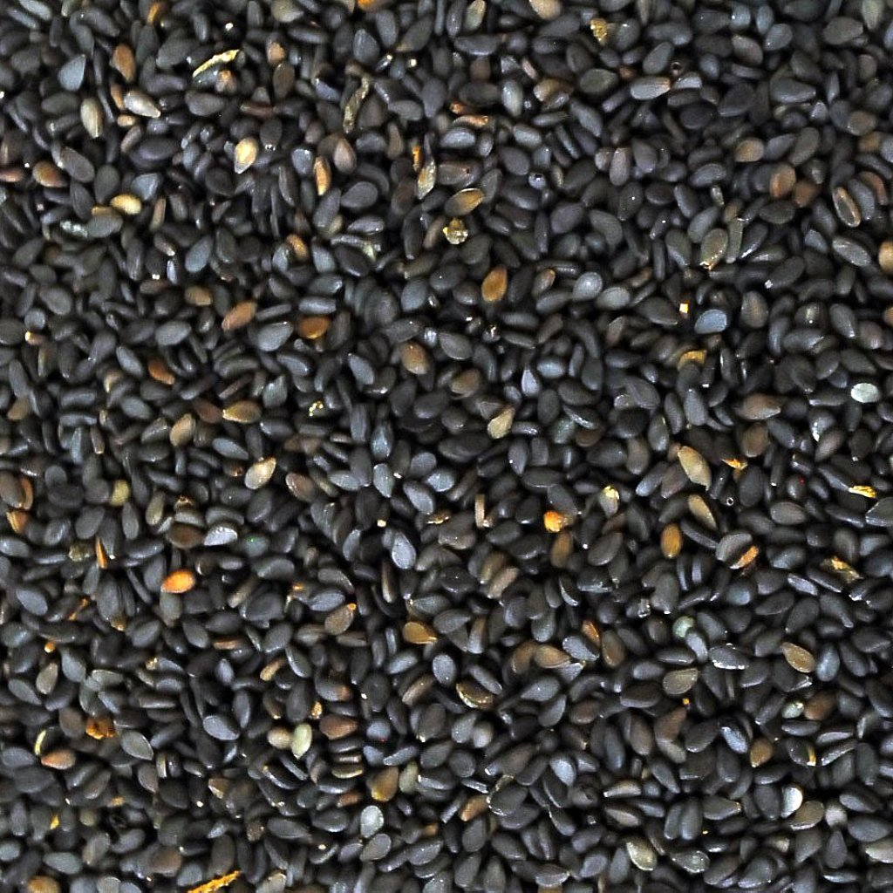
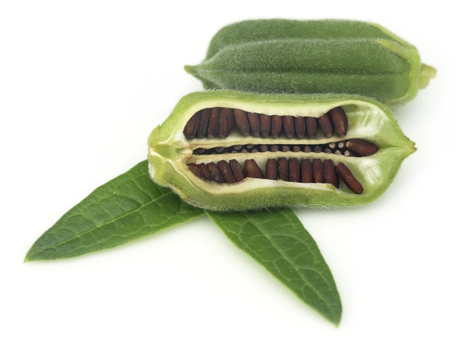
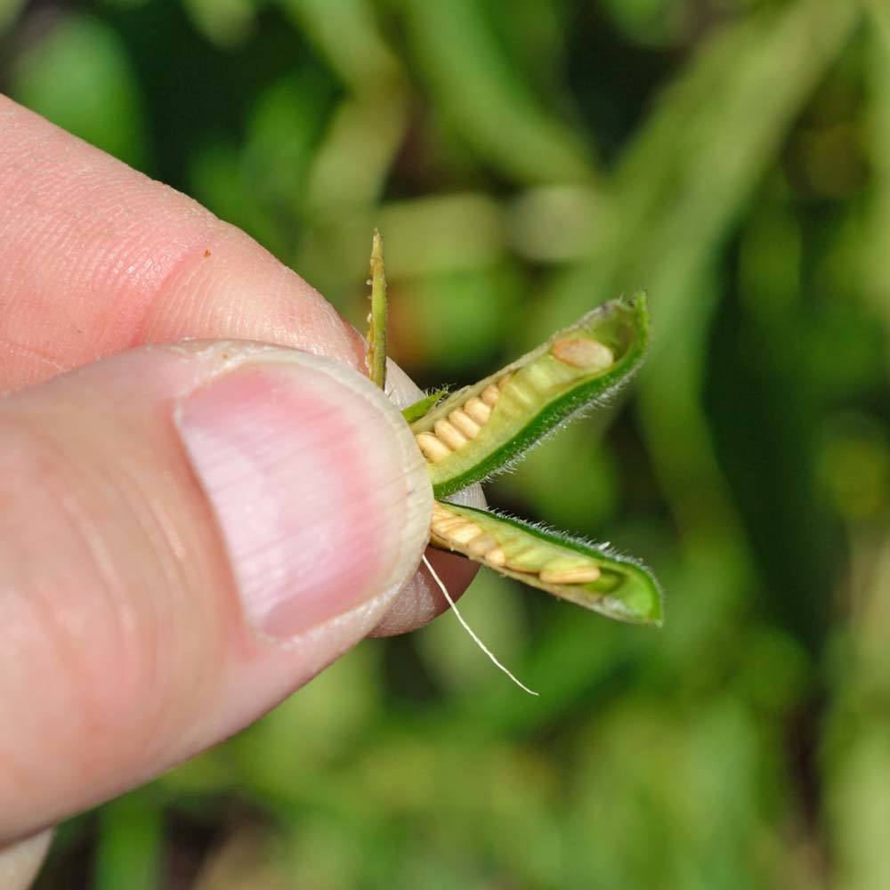
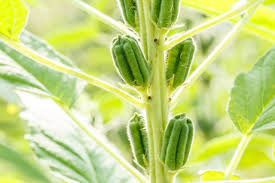

Filler
SESAME SEEDS
Sesame seeds come from the Sesamum Indicum plant. It is the oldest oilseed plants known to man and can be mostly found throughout Asia. The plant can grow over three feet tall and the stalks are bundled up. One advantage of these plants is that they’re drought-tolerant, but it still requires moisture for germination. Sesame seeds are protected by a capsule that opens upon ripening. During harvest time, the seeds are extracted from inside their pods and must be as dry as possible. These seeds are naturally dark brown, but they are washed and bleached to appear whiter.



